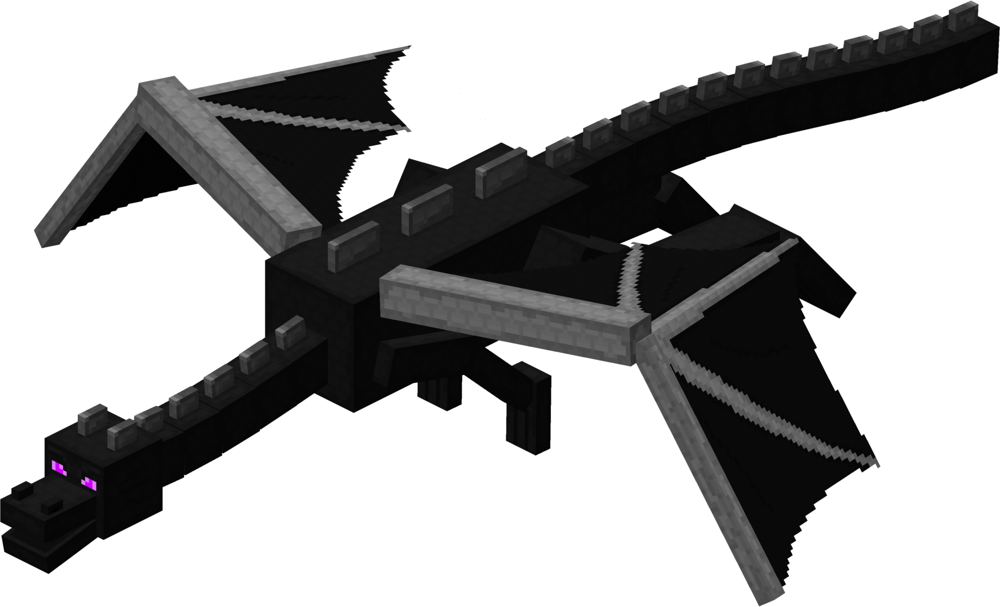

| Type | Ender Dragon |
|---|---|
| HP | Extremely High |
| Attack | Extremely High |
| Defense | 2 |
| Speed | 4 |
| Size | 4×4 |
| Dimension | The End |
Ender Dragon
The final boss of Craftics — defeating the Ender Dragon unlocks New Game+.
The Ender Dragon is the final challenge of Craftics, fought in the Dragon’s Nest at the end of The End dimension. Defeating it triggers New Game+ (NG+), scaling all enemies and rewards for subsequent playthroughs. Its 4×4 body dominates a large portion of the arena at any given moment, and its attacks cover wide areas with very little safe ground to retreat to.
Abilities
- Devastating Swoop: Sweeps across the entire arena in a cardinal direction, dealing massive damage to everything in its path. Telegraphed 1 turn.
- Dragon’s Breath: Leaves a 3×3 cloud of toxic breath at a targeted location, damaging any entity that enters it for 2 turns.
- Wing Buffet: Knocks all entities within 2 tiles away from the Dragon with heavy knockback.
- End Charge: Rushes directly to the player’s position, dealing full attack damage on arrival. Cannot be outrun without going around.
Strategy
Learn the swoop lanes and stay out of the center. The Dragon’s 4×4 body size means it controls a huge portion of the arena, so safe positions are limited and must be tracked carefully. Dragon’s Breath clouds persist for 2 turns — memorize where they land before repositioning. Save your strongest abilities and consumables for this fight. Defeating the Ender Dragon triggers NG+ with no reset, so commit fully.